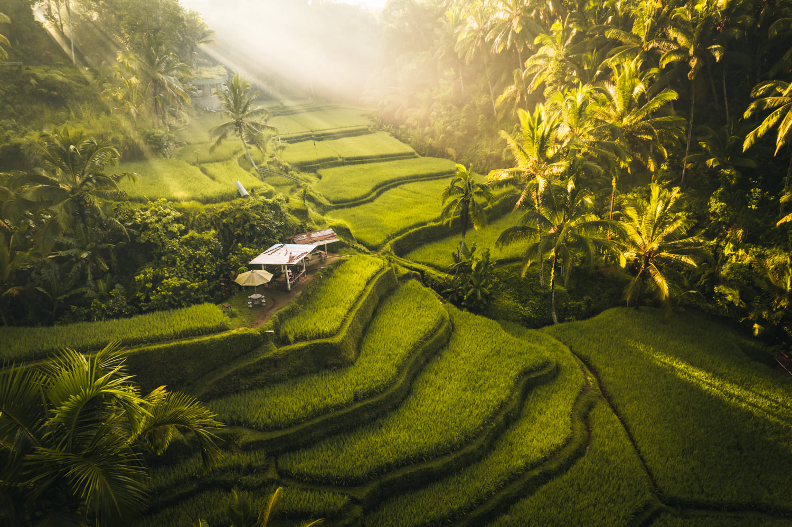

The Spiritual Side of Bali
Finding Peace in Ubud
My journey through Bali's spiritual heartland began in Ubud, where morning yoga sessions were accompanied by the sounds of gamelan music and chanting from nearby temples. The sacred Monkey Forest taught me that spirituality here exists in harmony with nature.
Temple Hopping Adventure
From the cliffside Uluwatu Temple to the water palaces of Tirta Gangga, each sacred site revealed different aspects of Balinese Hinduism. My favorite was the serene Goa Gajah (Elephant Cave) with its ancient meditation chambers.
Local Wisdom
A Balinese priest taught me about the daily offerings (canang sari) that grace every doorstep. "It's not religion," he explained, "it's our way of maintaining balance between the physical and spiritual worlds."
Bali Spiritual Travel Tips
- Dress modestly when visiting temples (sarongs provided)
- Attend a purification ceremony at Tirta Empul
- Respect silent days (Nyepi)
- Try ecstatic dance at The Yoga Barn